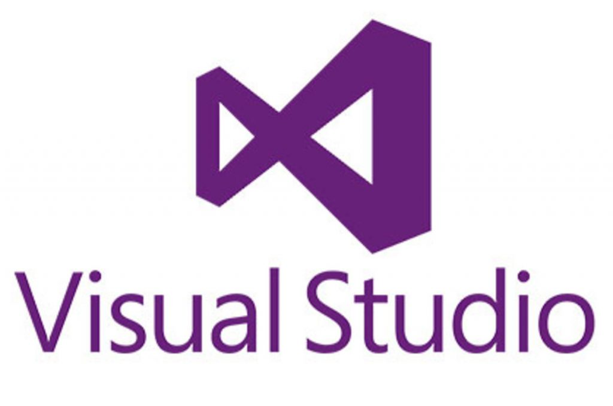

Для создания этих страниц использовалась программа Visual Studio
Ссылка на оффициальный сайт будет ниже

[ Visual Studio ]
PHOTOSHOP — это швейцарский нож дизайнера
Photoshop придумал студент Мичиганского университета Томас Нолл 34 года назад. Тогда программа называлась Display. Но всего через год после запуска её купила Adobe Systems — американская компания — разработчик программного обеспечения. А ещё через год редактор получил новое название — Adobe Photoshop.
Три десятка лет Photoshop был главным инструментом для профессиональных дизайнеров и фотографов, а также любителей, а Adobe — монополистом на рынке графических редакторов. Всё это время редактор обрастал новыми функциями, и сейчас его можно сравнить с хорошим швейцарским ножом — Photoshop настолько же универсален.
Photoshop — это редактор растровой графики. А растровое изображение — это то, которое состоит из множества точек — пикселей. Чем больше точек, тем больше возможностей для работы с цветом и выше качество картинки на выходе.
Photoshop умеет работать с фотографиями, 3D-объектами, анимацией, типографикой. Хоть на рынке уже появились узкоспециализированные программы, с помощью Photoshop до сих пор можно решить любую задачу, например:
[ НА ГЛАВНУЮ]